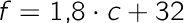

- iBogen er under udvikling. Se hvornår den udkommer
Formler og variable
Formler
{kind=link}
Før gymnasiet er du nok stødt på en eller flere af følgende sætninger inden for geometrien:
"Omkredsen af en cirkel er to π gange radius"
"Arealet af en trekant er halvdelen af højden ganget med grundlinjen"
"Volumenet af en pyramide er en tredjedel af højden ganget med grundfladens areal "
Sætningerne angiver præcise matematiske variabelsammenhænge, så vi vil nu indføre matematikkens koncentrerede skrivemåde. Vi omskriver sætningerne til formler:
Størrelserne omkreds, radius, areal osv. er vist ved ordenes forbogstaver, og der er indført lighedstegn. Bogstaverne er i virkeligheden blot ”pladsholdere” for talværdier, så formlerne afslører noget generelt, der skal gælde om de tre typer af geometriske figurer.
Lad os se på den formel, der gælder om arealet af en trekant:
Hvis vi har en trekant med h = 4 og g = 8, kan vi bestemme arealet ved at indsætte i formlen:
Hvis tallene stammer fra nogle målinger, bør vi anføre måleenheder efter tallene. En gavl på et hus med grundlinjen 8 m og højden 4 m har således arealet:
I det følgende vil vi dog for nemheds skyld udelade enheder i beregningerne og blot anføre en eventuel enhed i den tilhørende tekst. Men vær opmærksom på, at der i de naturvidenskabelige fag er en tradition for altid at medtage enheder - din fysiklærer elsker enheder.
Note
Afhængig og uafhængig variabel
Om trekantsformlen vil matematikeren umiddelbart tænke: ”Jeg kan let beregne arealet af en trekant, når bare jeg kender højden og grundlinjen". Hun kan med andre ord frit vælge værdierne af h og g, men hendes valg vil resultere i en bestemt værdi af A. De variable størrelser spiller på den måde forskellige roller, og rollefordelingen afhænger af hvilken størrelse, der står alene på venstre side af lighedstegnet. I eksemplet optræder A som den afhængige variabel og h og g som uafhængige variable.
Vi kan ændre rollefordelingen ved at "flytte rundt" på bogstaverne i formlen. Hertil skal vi benytte reglerne for omformning af ligninger, der gælder generelt - altså også når vi arbejder med bogstaver. Hvis vi ganger med 2 og derpå dividerer med h på begge sider af lighedstegnet, kan vi isolere g:
Det kan se ud til, at der er opstået en ny matematisk sammenhæng, men det er ikke tilfældet. Det matematiske indhold i den sidste formel er præcis det samme som i den første (i omformningen må vi dog forudsætte at h ikke er nul, da man ikke kan dividere med 0). Men i den sidste formel ser vi situationen fra en anden synsvinkel. Nu er A og h de uafhængige variable, hvis værdier vi frit kan vælge, og g, der står alene på venstre side, er den afhængige variabel. Vi kan bruge denne udgave af sammenhængen til at bestemme g, når A og h er kendte. Hvis en trekant har arealet 100 og højden 10 får vi for grundlinjen:
Vi kunne selvfølgelig også have indsat talværdierne i den første formel og derpå løst ligningen med hensyn til g. Med A = 100 og h = 10 fås så:
Altså samme værdi som før.
I formler, hvor der indgår mere end to variable, kan vi forenkle ligningen ved at fastlåse en af de variable. Fx kan vi give A værdien 100 i ligningen g = 2A/h:

I trekanten nedenfor kan du undersøge denne sammenhæng nærmere.
Note
Lad os opsummere nogle af årsagerne til, at formler er så anvendelige i matematik:
- De er korte, klare og generelle i deres udtryk
- Man kan hurtigt beregne værdien af en variabel ved indsætning af tal for de kendte størrelser
- Man kan, ved hjælp af reglerne for ligningsløsning, ændre deres "udseende" og dermed anskue sammenhænge fra en anden synsvinkel
Er formlerne så kun et fænomen i matematikkens abstrakte univers? Nej, de geometriske figurer ovenfor optræder jo i virkelige sammenhænge, hvor konkrete længder kan måles med et målebånd (fx gavlen på et hus). Og i ikke-geometriske problemstillinger viser det sig, at det forbavsende ofte er muligt at opstille formler, der knytter andre typer af målelige størrelser sammen. Det skal vi se mange eksempler på i de følgende afsnit.
Øvelse 1 - Formler og variable
Forklar hvad den afhængige og uafhængige variabel er i formlen for cirklens omkreds:
- En spisetallerkens radius er 13 cm. Hvad er omkredsen?
- Omskriv formlen, så der byttes om på afhængig og uafhængig variabel.
- En cykel kører 213 cm, hver gang hjulene roterer en omgang. Bestem radius og diameter for hjulene.
Øvelse 2 - Formler og variable
I mange sammenhænge vil en variabel størrelse naturligt indtage rollen som enten afhængig eller uafhængig variabel. Fx siger vi, at pulsen afhænger af farten, når vi kører på cykel, og vel ikke, at farten afhænger af pulsen. Det skyldes, at der er en kausal (årsag-virkning) sammenhæng mellem de to størrelser. Du kører med en vis fart, og det har som virkning, at du får en bestemt puls. Afgør, hvilken variabel der er uafhængig, og hvilken der er afhængig i følgende situationer:
- tidspunkt på året, badevandstemperatur
- et barns alder, barnets højde
- størrelsen af mobiltelefonregning, taletid
- bremselængde, bilens fart
Øvelse 3 - Formler og variable
BMI står for Body Mass Index og er en rettesnor for om en person vejer for meget eller for lidt. Sammenhængen mellem en persons BMI, højde h (målt i m) og vægt v (målt i kg) er givet ved
- Angiv den afhængige og de uafhængige variable i formlen og beskriv sammenhængen med ord.
- Beregn BMI for en person med vægten 80 kg og højden 1,75 m.
- Beregn vægten for en person med et BMI på 24 og højden 1,90 m.
Øvelse 4 - Formler og variable
I USA benyttes fahrenheittemperaturer i stedet for celsiustemperaturer. Man kan beregne en fahrensheittemperatur (f ) ud fra en celsiustemperatur (c ) ved brug af formlen:

- Angiv afhængig og uafhængig variabel.
- Beregn fahrenheittemperaturerne hørende til 0 grader celsius og 100 grader celsius.
- Isoler c i ligningen.
- Den højeste temperatur målt i Death Valley, Californien, er 134 grader fahrenheit. Hvilken celsiustemperatur svarer det til?
Note
Opgave 1 - Formler og variable
Sammenhængen mellem vægten m (i gram) og rumfanget V (i milliliter) af 100% rent alkohol er givet ved
- Angiv afhængig og uafhængig variabel i formlen og beskriv sammenhængen med ord.
- Beregn vægten af 300 mL sprit.
- Omform formlen, så der byttes om på afhængig og uafhængig variabel.
- Beregn rumfanget af 500 g sprit.
Opgave 2 - Formler og variable
En sten slippes og falder frit mod jorden. Sammenhængen mellem faldvejen s (målt i meter) og tiden t (målt i sekunder) er givet ved
- Angiv afhængig og uafhængig variabel i formlen og beskriv sammenhængen med ord.
- Beregn faldvejen for en sten, der har bevæget sig i 3,0 sekunder.
- Omform formlen så t spiller rollen som afhængig variabel.
- Bestem den tid, det tager en sten at falde ned fra toppen af rundetårn (34,8 m).
Note